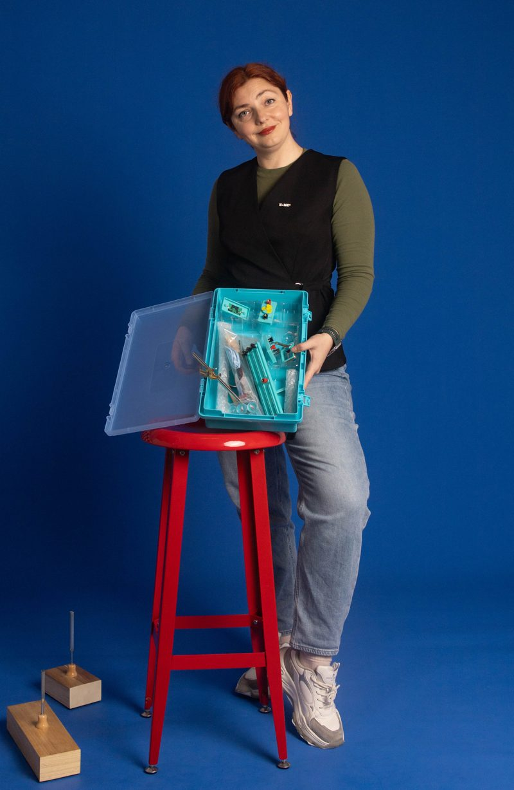
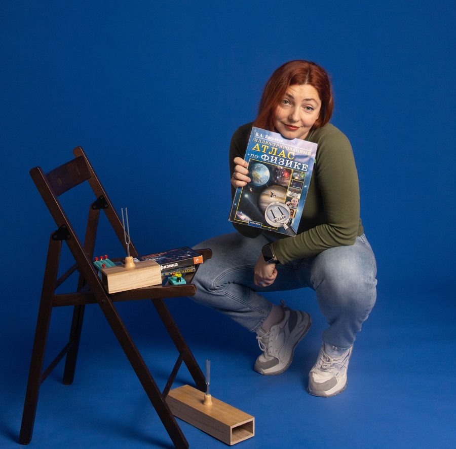

Обо мне
Занимаюсь со школьниками индивидуально и в мини-группах, онлайн.
На занятиях объясняю тему последовательно, показываю анимации и модели явлений, а затем учу самостоятельно выбирать физическую модель, законы и ход решения. Решения оформляем по требованиям ЕГЭ и ОГЭ.
Фото





Отзывы учеников и родителей
Отличный специалист, быстро и очень доступно объясняет предмет. Замечательный подход к ребёнку, дочка очень довольна. Теперь у нас железная 5 по физике. За одно занятие может запросто объяснить несколько тем! Очень рекомендую.
Екатерина Сергеевна, спасибо, вы супер! Дочка внезапно полюбила физику. Теперь жду успешной сдачи ОГЭ :)
Преподаватель очень нравится, всё объясняет очень доступно, легко. Быстро научился решать задачи, теперь умею решать задания из ЕГЭ, знаю то, что в школе не дают. Даёт много полезного материала и всяких лайфхаков.
Готовилась с Екатериной Сергеевной месяц к ОГЭ по информатике. Всё объясняется доступным языком. Задаются небольшие домашние работы на закрепление материала, если что-то неправильно, вместе находим ошибки и исправляем их. Очень понравилось, рекомендую!
Отличный репетитор! Дочка с физикой «не дружит», но после занятий с Екатериной Сергеевной стала разбираться в пройденных темах. Появилась уверенность в себе. Мы очень довольны результатами.
9 класс, сдаём физику ОГЭ. Екатерина Сергеевна прекрасно даёт материал, всё настроено на сдачу экзамена — прорешивание задач и подача материала. Чувствуется опыт работы с подростками. Ребёнок с удовольствием занимается и всё понимает.
Екатерина Сергеевна готова и может решать непростые задачи. Блестяще справляется с этим. Может сжато и доходчиво донести материал. С ней легко и приятно взаимодействовать.
Занимаемся с дочерью подготовкой к ОГЭ по информатике два месяца. Ребёнок с первого занятия начал выполнять задания и в школе решает почти всё самая первая. Хотим попробовать подготовку по математике и физике тоже с этим репетитором.
Занимаемся второй месяц по программе 8 класса. Дочке очень нравится! Объясняет всё доступно, понятно, на занятия не опаздывает. В триместре у нас 5! Очень рекомендую преподавателя!
Мои каналы
Записаться на занятие
Напишите, в каком вы классе и к какому экзамену готовитесь, — подберём формат занятий.